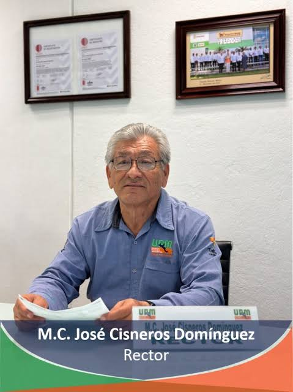

Es un honor dirigirme a la sociedad de esta región como nuevo rector de la Universidad Politécnica Mesoamericana. Desde el momento en que asumí esta gran responsabilidad, por la confianza otorgada por el gobernador del estado, el C. Javier May Rodríguez, me he entregado de tiempo completo a desempeñar este cargo con compromiso, entrega y dedicación. Mi propósito es claro: continuar cumpliendo con los objetivos, misión y visión de nuestra universidad, en sintonía con las necesidades del entorno social, ambiental y económico; así como con los ejes rectores del Gobierno Federal en el marco de la Nueva Escuela Mexicana. Así seguiré actuando hasta el último día de mi gestión.
Nuestra universidad forma parte de los organismos de educación superior descentralizados del Gobierno del Estado de Tabasco, y pertenece al subsistema nacional de Universidades Tecnológicas y Politécnicas. Fue fundada en 2006 con una misión clara: formar profesionales altamente competentes, comprometidos con la investigación científico-tecnológica y con una vocación de liderazgo orientada al desarrollo sustentable de la región mesoamericana. Nuestra visión es ser reconocidos por la excelencia académica y la vinculación efectiva con los sectores productivos, sociales y privados, contribuyendo a una educación pertinente a las demandas de la sociedad.
Estamos ubicados en una región privilegiada, entre dos importantes Áreas Naturales Protegidas, lo que nos compromete aún más con su cuidado y preservación. Por un lado, el Área de Protección de Flora y Fauna Cañón del Usumacinta, atravesada por el majestuoso río Usumacinta —el más caudaloso del país—, parte del Corredor Biológico Mesoamericano. Por otro, la recientemente declarada Reserva de la Biosfera Wanha’ (Río de las Codornices), establecida durante el sexenio del Presidente Andrés Manuel López Obrador, que abarca la cuenca media del río San Pedro, considerado uno de los más limpios y bellos de México. Nuestra universidad se encuentra cerca en el núcleo de esta reserva, lo cual reafirma nuestro compromiso con el medio ambiente y la acción climática.
A los más de mil egresados de nuestros distintos programas educativos les expreso mi reconocimiento. Lleven siempre en alto los conocimientos, principios y valores adquiridos en esta casa de estudios. Ustedes son nuestros principales embajadores y promotores ante la sociedad.
A quienes aspiran a formar parte de la UPM, les aseguramos que no se arrepentirán. Aquí encontrarán una oportunidad única para construir su futuro profesional y ampliar sus horizontes de bienestar y progreso personal.
A los docentes, mi más sincero agradecimiento. Su labor es invaluable. Educar a los jóvenes es una tarea que exige compromiso afectivo, empatía y vocación. Recuerden que un maestro que enseña con pasión deja huella en sus estudiantes, al igual que estos dejan huella en su maestro. ¡Formemos juntos a los líderes del mañana!
Finalmente, a los padres y tutores, gracias por confiar en nosotros. Asumimos con responsabilidad el privilegio de complementar la educación de sus hijos. Somos una institución que promueve la ética, el respeto, la inclusión y los buenos valores. Les pedimos que caminemos juntos en la misma dirección: Fomentemos el orden y la disciplina, tanto en el hogar como en la universidad, para lograr un impacto positivo y duradero en la vida de nuestros estudiantes.
Sigamos construyendo juntos una universidad con propósito, compromiso y orgullo mesoamericano.
Atentamente:
M.C. José Cisneros Domínguez
Rector